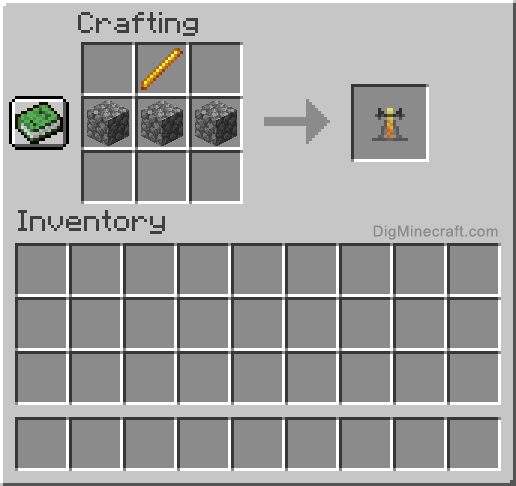
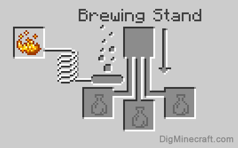

A brewing stand is crafted from 3 cobblestones, and one blaze rod.
After placing, and right clicking the brewing stand, a menu will show up
You have to fuel up the brewing stand with a blaze powder. One blaze powder can brew 20 times, which is 20x3=60 bottles, if you use 3 every bottles time

Start by making an awkward potion